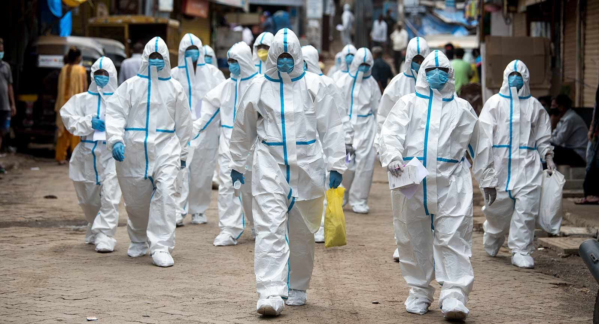

COVID-19
 The coronavirus disease (COVID-19) pandemic, which originated in the city of Wuhan, China, has quickly spread to various countries, with many cases having been reported worldwide. India, with a population of more than 1.34 billion—the second largest population in the world—will have difficulty in controlling the transmission of severe acute respiratory syndrome coronavirus among its population. Multiple strategies would be highly necessary to handle the current outbreak; these include computational modeling, statistical tools, and quantitative analyses to control the spread as well as the rapid development of a new treatment. The Ministry of Health and Family Welfare of India has raised awareness about the recent outbreak and has taken necessary actions to control the spread of COVID-19. The central and state governments are taking several measures and formulating several wartime protocols to achieve this goal.The COVID-19 pandemic, also known as the coronavirus pandemic is the greatest humanitarian challenge faced by the world. The pandemic has spread widely, bringing the world to a halt and the number of cases continue to rise. Governments all around the world are working to slow down if not completely stopped the spread of this pandemic. They have implemented many protocols and one very crucial one is wearing of mask to avoid infection till vaccinations become accessible to all.
As per the official government guidelines, India is making preparations against the COVID-19 outbreak, and avoiding specific crisis actions or not understating its importance will have extremely severe implications. All the neighboring countries of India have reported positive COVID-19 cases. To protect against the deadly virus, the Indian government have taken necessary and strict measures, including establishing health check posts between the national borders to test whether people entering the country have the virus. Different countries have introduced rescue efforts and surveillance measures for citizens wishing to return from China.
Hope is important, and recognising successes is vital, especially during a pandemic. But presenting the current situation in India with a too positive spin not only clouds reality but also hampers vital public health initiatives. Perpetuating unrealistic claims or failing to honestly report negative news creates uncertainty among the public and health-care professionals, discouraging people from taking preventive action or taking public health messages seriously. India has the expertise in medicine, public health, research, and manufacturing to lead the nation through the COVID-19 pandemic. To capitalise on these attributes, the country's leaders must respect scientific evidence, expert commentary, and academic freedom, and not provide false optimism.
A year has passed since the first case of novel coronavirus infections was detected in China’s Wuhan province. During the initial period of the disease, the efforts were concentrated on preventing and slowing down transmission. Global analysis of herd immunity in COVID-19 has shown the urgent need for efficacious COVID-19 vaccines. Currently, the vaccine development efforts have started to come to fruition as some of the leading vaccine candidates have shown positive results in the prevention of clinical disease.
COVID-19 vaccine candidates that are under production and in clinical trials in India are among the leading products internationally. Apart from India’s indigenous COVID-19 vaccines, some local pharmaceutical and biotech companies have signed collaborative agreements with foreign-based vaccine developers. These collaborations range from conducting clinical trials to large-scale manufacturing of vaccines and their distribution.So, all should understand the importance of vaccine and get vaccinated as soon as possible.